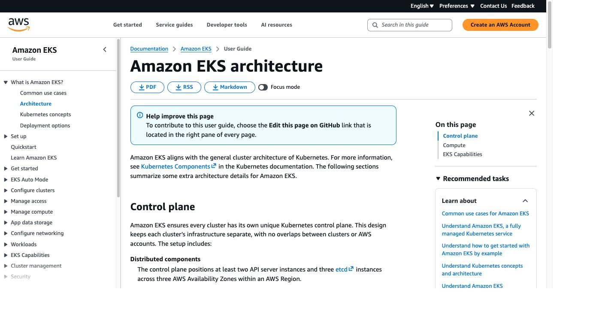

EKS Architecture: Control Plane, Data Plane, and What to Decide Before Launch
In the last post, we covered the three ways to run Kubernetes — local, self-managed, and managed — and landed on managed Kubernetes as the practical default, using Amazon EKS as the example. That answers how you run it. It doesn't answer what an EKS cluster actually looks like under the hood, or which decisions you need to understand before creating one.
Some of these settings can be changed later, but they affect access, networking, security, availability, and day-to-day operations — so it's better to understand them before creating the cluster than to discover them mid-incident. Imagine an app is already running on EKS and one day you see network timeouts, pods stuck in Pending, or kubectl commands hanging. The engineers who recover quickly are the ones who understand the architecture clearly — they know where to look because they know what each part of the cluster actually does.
Control plane and data plane
Every Kubernetes cluster — EKS, GKE, AKS — has two main parts: a control plane that manages the cluster, and a data plane where your workloads actually run. The control plane is the brain — it decides where pods should run, tracks the cluster's desired state, and coordinates changes like deployments and updates. The data plane is where your actual containers, pods, and deployments live.
In managed Kubernetes, this separation matters because two different parties are responsible for the two halves. On EKS, AWS manages the control plane; your worker nodes and application workloads run in your own AWS account.
EKS Cluster
├── Control Plane (Head Office)
│ ├── API Server (Reception Desk)
│ ├── etcd (Company Records Database)
│ ├── Scheduler (Operations Manager)
│ └── Controller Manager (Office Supervisor)
│
└── Data Plane (Business Departments)
├── Worker Node (HR Department)
│ └── Pod (HR Application)
│ └── Container (Service)
├── Worker Node (Marketing Department)
│ └── Pod (Marketing Application)
│ └── Container (Service)
└── Worker Node (IT Department)
└── Pod (IT Application)
└── Container (Service)

The control plane — what AWS owns
When you create an EKS cluster, AWS provisions and manages the control plane for you — you don't create the control-plane servers, install Kubernetes on them, or manage their availability. But you still need to understand what's happening inside it, because every kubectl command and scheduling decision passes through it. Four components matter most:
The API server is the front door to your cluster. Every kubectl command — get pods, apply, delete — goes to the API server first. It checks three things: is the request valid, who sent it, and are they allowed to do this? Once it accepts a request, the other control-plane components can act on it. See the official Kubernetes Components docs for the full breakdown of each piece.
etcd is the cluster's database — it stores every Pod, Deployment, ConfigMap, Secret, and other object that makes up the cluster's state. In a self-managed cluster, etcd backup and recovery are your responsibility (see the last post's breakdown of what that actually costs). On EKS, AWS manages etcd as part of the control plane, which removes a real operational burden.
The scheduler watches for pods that exist but haven't been placed on a node yet. When it finds one, it checks available worker nodes and picks a suitable one based on resources and scheduling rules (node selectors, taints, tolerations — the details don't matter yet). The scheduler only decides where a pod should run; the kubelet on the chosen node is what actually starts it.
The controller manager runs background processes called controllers. A controller continuously compares the cluster's current state against its desired state, and when they don't match, it acts to bring the cluster back into line.
You never SSH into these components and you don't manage etcd directly — AWS operates the highly available control plane and its infrastructure. You're still responsible for choosing the Kubernetes version, managing cluster access, configuring logging, and planning upgrades. But the control plane alone can't run your application — it needs machines that can pull images, start pods, and provide CPU and memory. That's the data plane.
The data plane — what you manage
Worker nodes are EC2 instances running in your AWS account and your VPC. Unlike the control plane, you choose, pay for, and manage them yourself. Each worker node runs two components that let it talk to the control plane and run your applications.
Kubelet is the Kubernetes agent on every worker node. It talks to the API server, receives instructions about pods scheduled on its node, and makes sure those pods are running correctly — think of it as a department supervisor: Head Office sends instructions, the supervisor makes sure the work gets done in that department. If a container crashes, kubelet reports the status back to the API server. But kubelet only manages containers within a pod that already exists on its node — if a whole pod disappears, a controller detects the mismatch and creates a replacement elsewhere.
Kube-proxy manages service networking rules on each node, so pods can reach Services and each other. Where kubelet makes sure pods are running correctly, kube-proxy makes sure traffic actually reaches them. Deploy an app's frontend and backend: the scheduler assigns pods to nodes, kubelet pulls the images and starts the containers, and kube-proxy handles the routing so traffic lands on the right pod.
Why this split matters during an incident
The control plane and the data plane fail in different ways, and knowing which one is failing is the first real step in any EKS incident.
If the control plane has a transient issue — the API server briefly unavailable, say — your already-running pods usually keep running, and traffic to your application can continue. What you lose is the ability to make changes: kubectl may stop responding, new pods can't be scheduled, deployments can't update. The kubelet on each node keeps managing its local pods even while the control plane is briefly unreachable.
The reverse is also true: if a worker node crashes, the control plane detects the failure and reschedules the affected pods elsewhere (assuming healthy capacity exists) — a single node failure doesn't touch the control plane itself.
So during diagnosis: if kubectl is timing out but your application is still serving traffic, look at the control plane or the network path to it — not your running pods. If pods are failing but kubectl works fine, look at the data plane — worker nodes, kubelet, the CNI, container images, application health.
How the control plane talks to worker nodes
EKS isn't just Kubernetes components — it's Kubernetes components connected through AWS networking, and a lot of real EKS issues come from exactly this boundary. The control plane runs in AWS-managed infrastructure; your worker nodes run in your VPC. When you create a cluster, EKS creates managed elastic network interfaces in the subnets you select — these ENIs are the actual communication path between the control plane and your VPC. You can see them in the VPC console; their description includes your cluster name.
EKS creates and manages these automatically — you don't create them. But your VPC configuration, subnets, route tables, and security groups still matter. A common failure mode: someone changes a VPC, subnet, route table, or security group setting and accidentally breaks this communication path. The cluster can still look healthy in the console while kubectl times out or nodes stop communicating. Practical rule: before applying any VPC or security group change, check whether the EKS-managed network interfaces are affected, and include them in the change review. See the official EKS networking requirements for the details.
How kubectl actually connects
When you run kubectl get pods, kubectl first reads your kubeconfig file (usually ~/.kube/config) for the API server endpoint and how to obtain credentials. For EKS, the API server has an HTTPS endpoint, and kubectl authenticates using AWS IAM. Once authenticated, Kubernetes authorization — usually RBAC — decides what you're allowed to do. You wire this up with one command:
aws eks update-kubeconfig --region eu-west-1 --name book-review
Who can reach the cluster?
This is a decision to make before you create the cluster — it affects developers, CI/CD, and worker nodes. EKS gives you three endpoint access modes:
Public only (the default). The API server is reachable from the internet, protected by IAM and Kubernetes authorization. Fine for a dev cluster; for production it means a misconfigured rule or leaked credential is a bigger risk. If you use public mode, set publicAccessCidrs to restrict it to known ranges (office, VPN, CI runners) — the default is wide open.
Public and private (the common production pattern). Reachable from both the internet and your VPC. Traffic from inside the VPC — node-to-API-server, for instance — can use the private endpoint and never leave the VPC. Engineers and CI/CD can still use the public endpoint if you allow it, restricted carefully.
Private only. Not reachable from the internet at all — access needs a real network path into the VPC (VPN, Direct Connect, a bastion host). Strong security posture, right for regulated environments — but the operational risk is real: switch to private-only before that access path exists, and you can lock yourself out of kubectl, recoverable only through the AWS API or console. If you use private access, make sure VPC DNS support and DNS hostnames are enabled so the private endpoint actually resolves. Read the official cluster endpoint access control docs before you create a production cluster — this setting touches everyone who needs to reach the cluster.
IAM authentication: access entries, not aws-auth
update-kubeconfig only tells kubectl where the cluster is and how to request an IAM token — it doesn't grant you permission to actually use the cluster. Your IAM identity still needs to be mapped to Kubernetes access, and how that mapping works has changed.
The older method was a Kubernetes ConfigMap called aws-auth in kube-system, where you added entries mapping IAM users and roles to Kubernetes usernames and groups. The problem: it was a manually managed YAML file, and a single indentation error could invalidate it — breaking IAM-to-Kubernetes mappings for everyone, with recovery often depending on the original cluster-creator IAM principal, which many organizations had long since rotated away. This wasn't theoretical; teams really did get locked out this way. It also didn't go through the EKS API, so changes to it didn't show up in CloudTrail the way EKS-native changes do.
AWS now recommends EKS access entries instead — IAM roles and users are managed directly through the EKS API, changes are tracked in CloudTrail, and it's compatible with Terraform and CloudFormation (you can define cluster access at creation time, no separate post-creation Kubernetes-API step). AWS provides predefined access policies (AmazonEKSClusterAdminPolicy, AmazonEKSViewPolicy, and others) to attach based on the access level needed. If something breaks, you have an AWS-side recovery path through the EKS API or console, not just kubectl. For any new cluster, use access entries. Full docs: EKS access entries and, for existing clusters still on the legacy method, the aws-auth ConfigMap docs.
Control plane logs
For a standard EKS cluster, AWS doesn't enable control plane logs by default — all five types are off until you turn them on. This is one of the first things worth enabling on any production cluster, because without these logs, troubleshooting access issues, API activity, or scheduling problems takes far longer than it needs to.
- API server logs — server-level logs including startup flags and diagnostics. Useful for API deprecation warnings or unexpected API behavior.
- Audit logs — who did what, when, from where, with which credentials. The forensics layer — without it, a mistaken deletion or security incident leaves no trail.
- Authenticator logs — IAM authentication attempts, success or failure. When someone gets "Unauthorized," this tells you whether the IAM token was invalid, the role has no access entry, or the problem is actually in RBAC.
- Controller manager logs — the core control loops: pod garbage collection, node lifecycle, replication. Useful when pods aren't being recreated after a node failure.
- Scheduler logs — why a pod isn't being placed: resource constraints, a node selector mismatch, an unmet taint/toleration, an affinity conflict.
Enable these under the cluster's Observability tab in the console, or via Terraform. Logs go to CloudWatch — plan retention and ingestion cost accordingly. Don't wait for the first incident: enable at minimum audit and authenticator logs on every production cluster from day one. Full reference: EKS control plane logging.
The node IAM role
Worker nodes need their own AWS identity to join the cluster, and the failure modes when it's misconfigured aren't always obvious. Two policies are required:
AmazonEKSWorkerNodePolicy lets kubelet describe EC2 resources and register the node with the cluster. Without it, nodes show up as NotReady — or don't show up at all — and the error isn't obviously IAM-related.
AmazonEC2ContainerRegistryPullOnly lets nodes pull images from ECR — not just your application images, but EKS add-ons and system components too. Without it, pods fail with ImagePullBackOff, and if CoreDNS can't start, cluster DNS breaks before your application even runs.
One more is conditionally required: AmazonEKS_CNI_Policy lets the VPC CNI plugin create network interfaces and assign pod IPs. Without the right permissions here, new pods fail to get an IP at all. AWS recommends attaching this to a separate role used by the aws-node service account (via EKS Pod Identity or IRSA) rather than the node role directly — least privilege, and the approach worth defaulting to. For managed node groups, EKS attaches the node role automatically; you're responsible for creating it and attaching the right policies. Full docs: EKS node IAM role.
Putting it together
Above the line, AWS runs the control plane — you don't SSH into it, you don't manage etcd directly, but you configure what surrounds it: endpoint access, authentication, access entries, control plane logs. Below the line, your worker nodes run in your own account and VPC — you own the node IAM role, networking permissions, node groups, and the workloads on top. When something breaks, this picture tells you where to look first: access, authentication, the control plane itself, networking, node permissions, or the workload — instead of troubleshooting everything at once.
Decisions to get right before your cluster goes live
- Endpoint access mode. Public + private is the common production pattern. Restrict public access with
publicAccessCidrsimmediately if it's enabled. If you go private-only, establish the VPN/Direct Connect/bastion path first, or you'll lock yourself out. - IAM authentication. Use access entries for new clusters, not
aws-auth. Access entries are API-managed, CloudTrail-auditable, and IaC-friendly. - Control plane logs. Enable them on day one — audit and authenticator at minimum, all five if you want full visibility, with CloudWatch retention set deliberately.
- Node IAM role. Attach
AmazonEKSWorkerNodePolicyandAmazonEC2ContainerRegistryPullOnly. Keep CNI permissions on a separate role via Pod Identity or IRSA. If CoreDNS fails right after cluster creation, check ECR pull permissions first. - EKS-managed network interfaces. Know they exist, and include them in every VPC/security-group change review.
EKS isn't just "AWS manages Kubernetes for you." It's a connected architecture — control plane, endpoint access, IAM authentication, logging, node permissions, networking, and workloads — and once you understand how the pieces connect, creating and troubleshooting a real cluster gets a lot less mysterious. This is exactly the kind of production judgment DMI's graded weekly loop is built to develop — not by watching someone else build it, but by building and being checked on your own.
Want the fundamentals these decisions build on? Start with DMI Self-Paced →